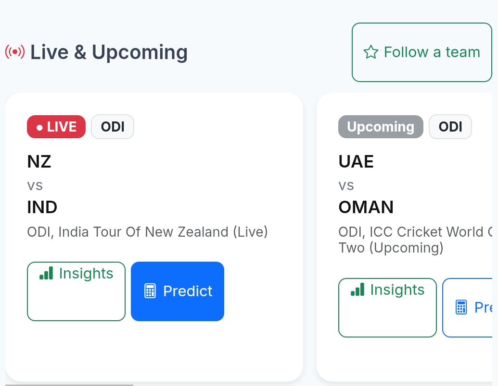
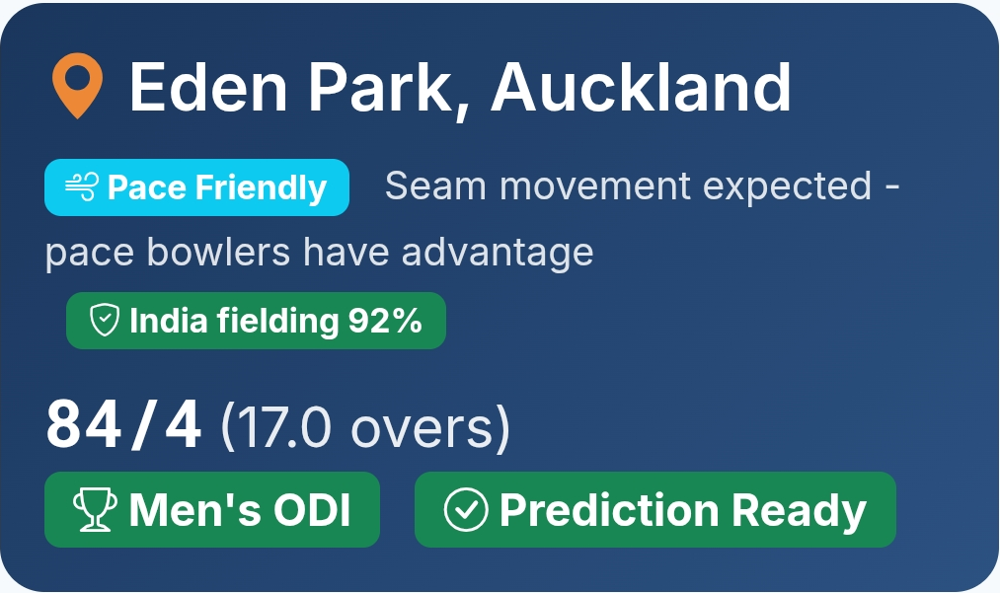
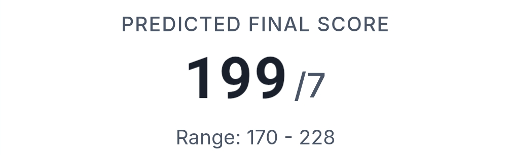
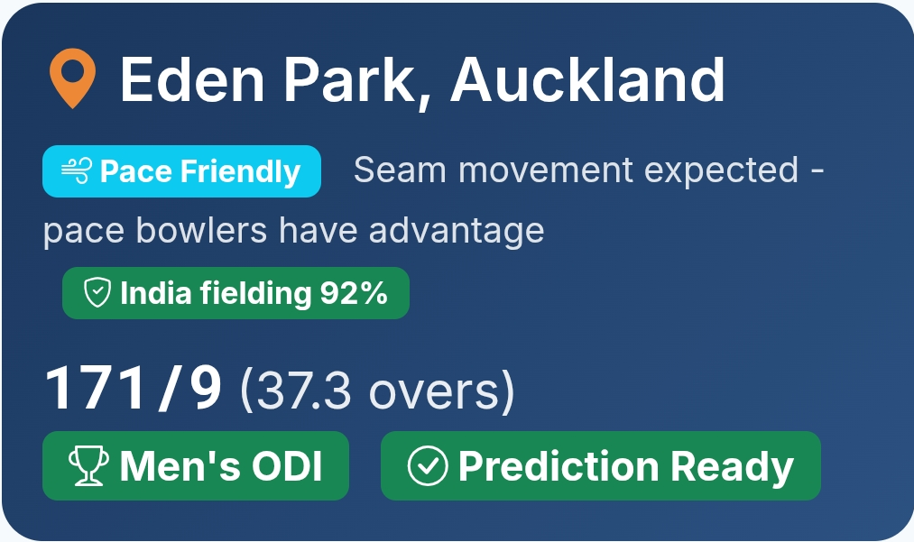
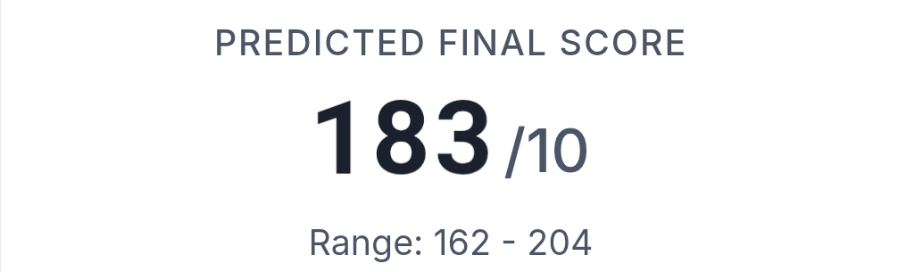

Fielding
How many runs is a dropped catch worth?
No scoreboard tells you.
CricPredict · fielding research
CricPredict · an independent project
Live score predictions for cricket fans

Pick a live match.Get a projected score.
India v New Zealand · 1st ODI, 2026
At 84 for four after 17 overs


CricPredict said 199/7Range 170–228
India v New Zealand · 1st ODI, 2026
At 84 for four after 17 overs
Finished 185 all out14 runs lower, 3 wickets more than predicted
India v New Zealand · 1st ODI, 2026
At 171 for nine after 37.3 overs


CricPredict said 183 all outRange 162–204
India v New Zealand · 1st ODI, 2026
At 171 for nine after 37.3 overs
Finished 185 all outTwo runs off
Model evaluation
Our backtest is public
Women's T20
16.6
MAE · runs
Women's ODI
38.3
MAE · runs
Average error in runs, 100 matches per format.
Men's ODI · the hardest format
41.5 runs average error
Range hit rate
46.8%
actual score inside range
Final-wicket MAE
3.11
wickets
Final-wicket bias
−2.98
predicted − actual
It tends to under-predict wickets.
Why not just measure it?
Public data can't see most of fielding.
RECORDED
✔ Catch taken✔ Run-out
NOT RECORDED
✖ Dropped catch✖ Misfield✖ Direct hit✖ Runs saved
Catches and wickets alone mix up fielding with bowling and team quality.
Event-level fielding data exists, but under paid licences. CricPredict uses free sources only.
Fielders are named only on successful dismissals.
If you hold fielding-event data
Let's compare notes.
A small sample dataset and its data dictionary is enough to start.
cricket-score-predictor.com
CricPredict · a collaboration, not a request
Fielding
Two runs off.
But fielding is where I can't tell you the whole story.
CricPredict · a cricket prediction app for fans
India v New Zealand · 1st ODI, 2026
Moments that swing a match
A CATCH
Kohli, one-handed, diving, at second slip
Dismisses Nathan Smith
A RUN-OUT
Rohit Sharma, a sharp assist
Moments like these swing a match.
Fielding today
One hand-assigned rating per team
A reputation, not who is actually on the field.
Part of what holds accuracy back, on runs and wickets.
The plan
Rate the fielders, then test it
1 · PUBLIC DATA FIRST
Catches and run-outs that end in a wicket. A first fielding model, in shadow mode.
2 · BALL-BY-BALL FIELDING DATA
If I can get it: rate the actual fielders in each XI.
3 · TEST IT
Runs and wickets separately, on fresh matches.
If it doesn't beat the current model, it doesn't ship.
If you hold fielding data,
or work at a data provider,
Message me.
Try CricPredict
cricket-score-predictor.com
Entertainment only. Not betting.
YOUR FACE CAMERA
GOES HERE
PLACEHOLDER · FULL SCREEN
KEEP YOUR HEAD INSIDE THE OVAL